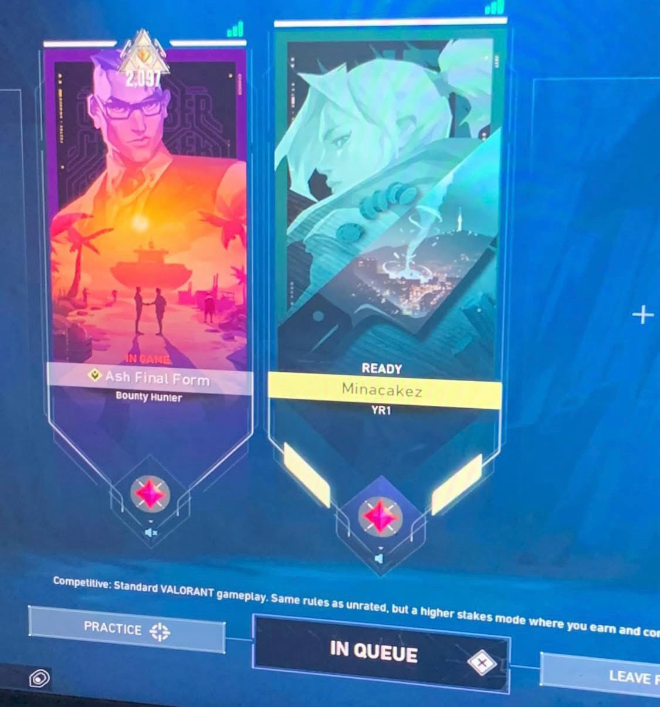
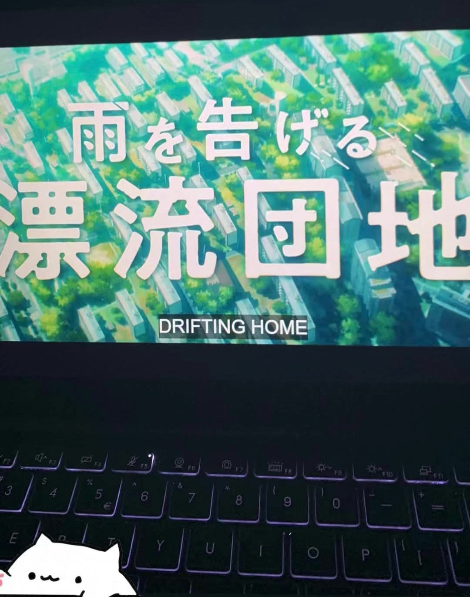

About Me

My peak rank on valorant

Watching Drifting Home

My 2 favorite songs right now
Skills
I am good at working in a team because I know how to communicate and help others.
Teamwork is important because it allows people to share ideas and solve problems together.
When I work with others, I make sure to listen carefully and respect their opinions.
I always try to be a helpful team member by doing my part and encouraging my teammates.Listening is another skill that I have, and I always try to understand people’s feelings when they talk.
I focus on their words and body language so I can respond in a kind and helpful way. This helps me build
good relationships with friends, classmates, and coworkers. When I listen well, people feel comfortable sharing their thoughts with me.
Another skill I have is adapting to change, which means I can adjust to new situations without feeling too stressed.
Change happens all the time, and I have learned to stay calm and find solutions when things don’t go as planned.
If I need to learn something new, I stay positive and try my best to understand it.
I believe that teamwork, listening, and adapting to change are important skills that make me a better person.
These skills help me work well with others and handle different situations in life.
Hobbies
One of my favorite hobbies is playing video games, especially online games.
I enjoy playing FPS games like Valorant and GTA because they are exciting and challenging.
These games require quick thinking, fast reflexes, and teamwork. When I play, I focus on improving my skills and learning new strategies.
I also enjoy playing with my friends because we can work together and have fun.
Sometimes, I play to relax, while other times, I play to compete and challenge myself.
Gaming helps me think quickly and make good decisions under pressure.
I also like open-world games where I can explore and try different activities.
Playing video games is more than just fun—it helps me learn patience and problem-solving.
I also enjoy talking to other players online and learning from them. Many online games have large communities where players share tips and experiences.
I have made new friends through gaming, and we often help each other get better at the game.
I also like trying new games to see different gameplay styles and stories.
Sometimes, I play solo to focus on my own skills, but I also enjoy team-based games where cooperation is important.
Gaming has been a big part of my life for a long time, and I always look forward to trying new games.
It is a great way to relax, have fun, and connect with people who share the same interest.
Interests
I have a strong interest in anime, online games, and music.
Anime is interesting because it has great stories, colorful animation, and unique characters.
I enjoy watching different types of anime, from action to comedy to drama. Each anime has something special that makes it fun to watch.I also like how anime teaches life lessons and shows different emotions.
Some anime have deep and complex stories that make me think.
I also like how anime introduces me to Japanese culture and traditions.
Another interest of mine is online games, which allow me to have fun and meet new people.
Playing games online lets me connect with others who enjoy the same things.
I like learning new strategies and improving my skills in different games.
Online games also help me work on my teamwork and communication.
Besides anime and games, I love listening to music.
Music helps me relax when I am stressed and gives me energy when I need motivation.
I enjoy different types of music depending on my mood.
Sometimes, I listen to upbeat songs to feel happy, while other times, I listen to calm music to relax.
I also like finding new songs and artists to listen to.
Music makes my daily life more enjoyable and helps me focus when I need to study or work.
My interests in anime, online games, and music bring me happiness and keep me entertained every day.